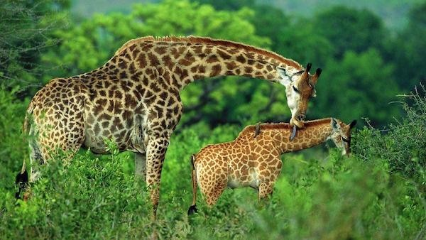

GIRAFFE
The giraffe is a large African hoofed mammal belonging to the genus Giraffa. It is the tallest living terrestrial animal and the largest ruminant on Earth. Traditionally, giraffes have been thought of as one species, Giraffa camelopardalis, with nine subspecies
The giraffe's distinguishing characteristics are its extremely long neck and legs, horn-like ossicones, and spotted coat patterns. It is classified under the family Giraffidae, along with its closest extant relative, the okapi.
WHERE WILL YOU FIND THEM?
You will find the Giraffes at G12, right next to the Lion park